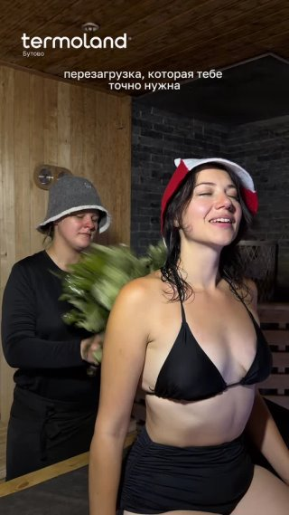
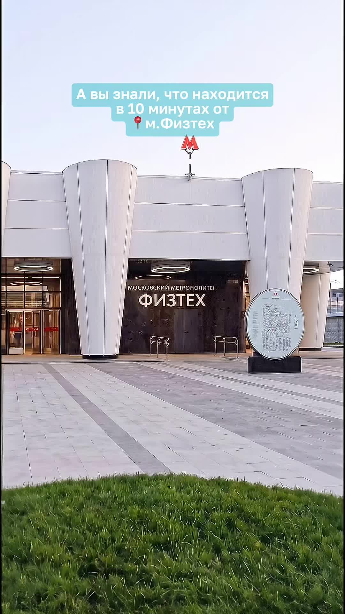
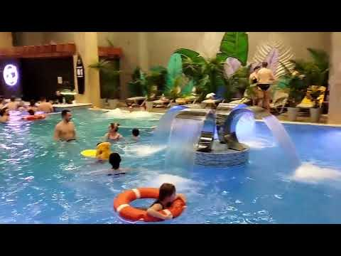

Давайте созвонимся и обсудим сотрудничество
20 минут. Покажу разбор Ваших клипов по каждому курорту и решим, с какого начинать.
Созвонимся, когда Вам удобно
Игорь Ильин«Бизнес по-русски» и студия
Два шага. Первый делаю я со студией: ролики каждый день на всех площадках. Второй придумываем вместе: блогеры снимают Ваши курорты и получают за просмотры бесплатный сеанс.
Давайте созвонимся и обсудим сотрудничество.
Созвониться на 20 минутЯ хожу в Ваш Физтех в Долгопрудном на тренировки. Поэтому решил посмотреть, как Термоленд живёт в соцсетях.
Вот два клипа из Ваших городских групп и обзор блогера на YouTube. Лучший клип, баня в Бутово, набрал 405 381 просмотр за 9 секунд. Обзор набрал 21 782 просмотра: о Вас уже рассказывают сами.
Снимать Вы уже умеете. Осталось делать это каждый день и на всех площадках.



Просмотры по счётчикам ВКонтакте и YouTube, снимок 24.11.2026.
Города снимают. Главная группа сети и YouTube почти молчат.
На канале 58 Shorts, лучший набрал 5 100 просмотров. А чужие обзоры Термоленда на YouTube набирают 26 332 и 21 782. О Вас уже рассказывают, только не Вы.
За полгода у группы курорта выходит от 40 до 98 клипов. Шесть с половиной в день - это сумма 17 групп, у каждой своя очередь.
Это меньше, чем одна группа Пензы: 49 766. Человек выбирает термы рядом с домом. О ближайшем Термоленде ему должен рассказать ролик в ленте.
Вместе 20,7 млн просмотров. Главной группы в этом списке нет: в ней за полгода один вертикальный ролик, не клип.
Открытые группы ВКонтакте и канал YouTube, снимок 24.11.2026. Клипы за 24.05-24.11.2026.
Мы берём съёмку: Вашу и нашу. Монтируем, подписываем, выкладываем и разбираем по цифрам, что залетело и почему. Подачу, которая работает, переносим на все курорты.
На каждом аккаунте свой ролик. Одинаковых роликов в разных группах не будет: ВКонтакте такие режет и не показывает в ленте.
Начинаем с одного курорта. Первые ролики - в подарок.
Через неделю сравним их с типичным клипом этого курорта в Вашей же статистике. Гостей не обещаю. Обещаю ролики, по которым через неделю видно число.
Блогер приходит, парится и снимает ролик. Набрал просмотры - получает бесплатный сеанс. Свободный час в будни ничего не приносит, пока пустует. Пусть приносит ролик.
Ступени - это Ваши же сеансы: 2, 3, 4 часа и «весь день». Взяты из раздела билетов на сайтах курортов, снимок 24.11.2026. Пороги просмотров - моё предложение, сдвинем под Вас.
Чем больше просмотров, тем длиннее сеанс. Всё по шкале выше.
На 5 000 просмотров блогер выбирает: весь день один или 3 часа с другом. Друг - это новый гость, который пришёл сам.
От 20 000 просмотров - день для блогера и до трёх друзей. И предложение работать дальше.
Ролики, акция, приём блогеров, счёт просмотров, выдача сеансов и отчёт по Вашим цифрам. От Вас - сказать, в какие часы свободно.
20 минут. Покажу разбор Ваших клипов по каждому курорту и решим, с какого начинать.
Созвонимся, когда Вам удобно